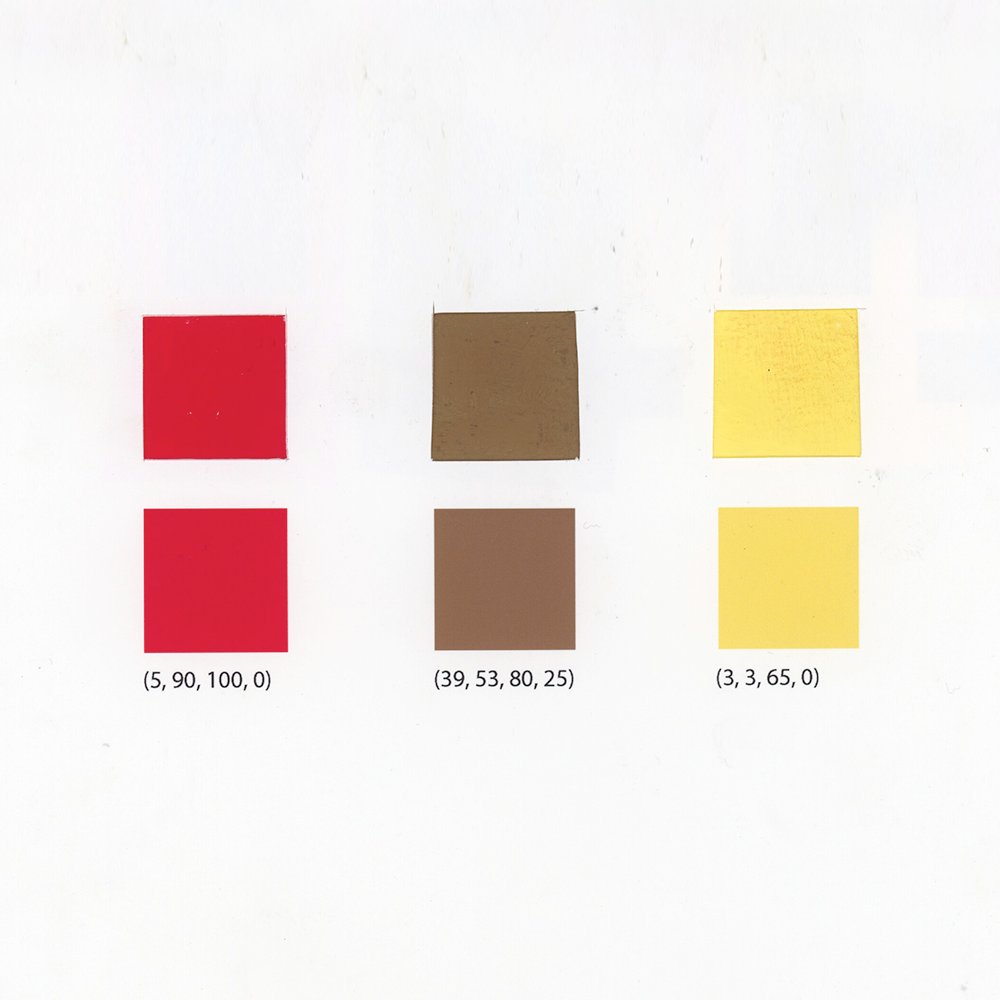
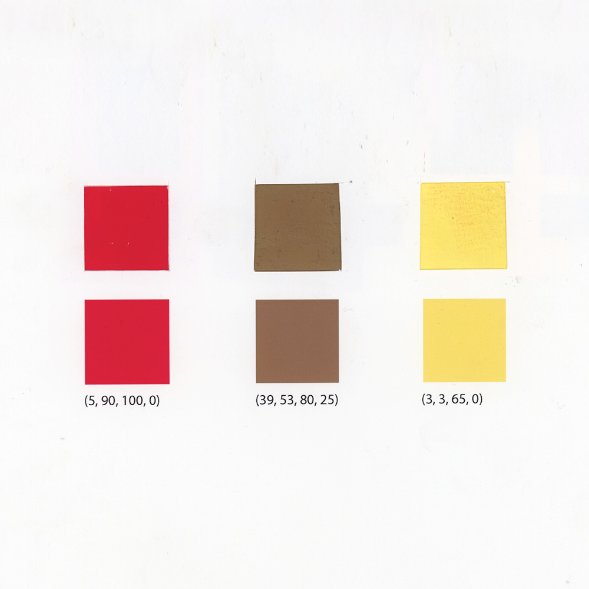

Assignment 5: Stamps From Nature
For the final assignment we had to take an object from nature and extract color swatches from it. After that, we then had to match the colors to a digital color. The objectives of this project were:
- To observe the theories discussed previously in full application in Nature
- To observe the variety of colors that can be mixed from two initial colors and black and white
- To observe hoe an element can appear transparent, moving forward or receding.
This influenced my color choice by making sure I chose from a variety of values and saturation however, I stayed within the same group of warm and soft colors to create some unison. Finally, in my stamp I chose to make a more abstract representation of a butterfly as well as experiment in terms of stylistic choices.
The end product came out sporting an old-fashion look and experimented with changes in color through gradients instead of opacities which if possible, I would go back to incorporate more.
//End of Assignment 5//